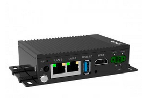
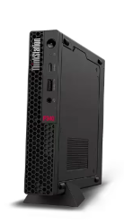
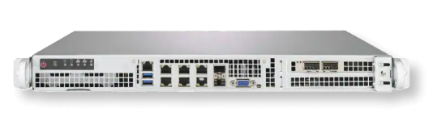

Provision and Manage Edge Devices with RHEL
Estimated reading time: 17 minutes.
- Objective
-
Introduction to edge devices, Red Hat Device Edge, and image mode for RHEL
| Pending review |
What is Red Hat Device Edge
Red Hat Device Edge is a software and support subscription that bundles three components:
-
Red Hat Enterprise Linux (RHEL), which includes a feature set known as RHEL for edge.
-
Red Hat build of MicroShift.
-
Red Hat Ansible Automation Platform.

Most of these components can be purchased as part of other subscriptions from Red Hat. For example, RHEL and Ansible are frequently purchased as their own subscriptions, instead of as part of a bundle. Red Hat Device Edge brings in a pricing and supportability scope that is more aligned with the characteristics of edge devices, as opposed to server-class machines.
For example, the per-CPU and per-machine cost of running RHEL with a Red Hat Edge subscription is lower than the cost of running RHEL with a Red Hat Enterprise Linux subscription. While the first targets small edge devices, with a single CPU socket and a few GB of memory, the second targets large servers in a data center, with multiple CPU sockets, each socket with a large number of cores, and hundreds of GB of memory.
You may purchase Red Hat Device Edge subscriptions to use RHEL in an army of small edge devices, but you could also find that some of your edge devices are too "large" and require a different subscription to get RHEL and other Red Hat products. In both cases, you get the full feature set of RHEL.
To be clear: Red Hat Device Edge is NOT a different edition of RHEL, nor a subset of RHEL. Many features of RHEL were developed to address the requirements of edge scenarios and are also proven valuable in data center scenarios. On the other had, features from RHEL that were designed for data center scenarios are also valuable in edge scenarios. Using the same operating system (RHEL) for both edge and data center systems brings increased standardization and ultimately reduces the effort and cost of managing edge devices.
What is image mode for RHEL
Image mode for Red Hat Enterprise Linux enables you to manage your OS with the same tools and workflows as for application containers, creating a consistent experience and common language across development and infra-structure teams.
Provisioning and updating RHEL systems using image mode is faster and more reliable than with the traditional approach of dealing with RPM packages one at a time. The traditional approach is now called package mode for RHEL.
Edge devices benefit from the consistency, reliability, and ease of rolling back updates to RHEL systems using image mode. Image mode also enables easy repurposing of edge devices, by loading into them different system images.
It is also easier for Operational Technology (OT) professionals, who are typically NOT Linux sysadmins, to perform device provisioning and updates using image mode for RHEL on far edge sites than with package mode for RHEL.
There are organizations using traditional RHEL provisioning and management workflows, based on package mode, on edge sites. These organizations have more success on larger near edge sites, which provide infrastructure similar to a data center, including larger machines, rack-based networking gear, and "server rooms". As those organization replace legacy, single-purpose and proprietary edge devices with newer, more flexible and standards-based edge devices, they can adopt process and workflows based on image mode alongside their existing package mode processes and workflows.
Before we dive deeper into the workflows and tools required by image mode for RHEL, let’s discuss how edge devices differ from servers in a data center and and what kind of edge devices you can provision and manage using RHEL.
What is an edge device
Edge devices, sometimes called edge endpoints, edge gateways, and edge servers, come in varying shapes and forms. For the purposes of this course, all of them are referred to as edge devices or edge systems.
Some of edge devices look just like standard computers, maybe in a rugged and smaller form factory. They could also take unique form factors which integrate sensors, servo-mechanisms, and other specialized peripherals in the same system board and might not look, from the outside, anything like a personal computer (PC).

Traditional edge devices were NOT capable of running a standard operating system like RHEL. They usually run an proprietary operating system embedded into their firmware. Such edge devices typically connect to a standard PC, called an edge gateway, which mediates the communication between these specialized and single-purpose edge devices and the larger network and IT infrastructure of their edge sites and corporate headquarters.
More modern edge devices are built on the same fundamental architecture, processors, chipsets, and peripheral busses as a standard PC, thanks to the advancements of smart phones and ARM architectures. These devices may be similar, regarding cost and power consumption, to traditional edge devices, but because they are able to run a standard operating system, they are in fact multi-purpose devices, which a potentially longer life span.
Some kinds of computers, such as mini-PCs, blur the line between a standard computer and an edge device. Depending on their capabilities, they may be eligible for Red Hat Device Edge subscriptions, or they may require a Red Hat Enterprise Linux subscription.
| RHEL is supported in a variety of CPU architectures, including many ARM variants. It may not support very small ARM boards similar to the Raspberry PI, but there are a number of vendors of small ARM computers which are certified for RHEL and many more which are either validated or compatible with RHEL. |
Use cases for edge devices with Red Hat Device Edge
Red Hat Device Edge is designed to support devices which are closer in hardware architecture to standard personal computers and servers. It benefits from the large ecosystem of software and hardware certified for RHEL and large pool of professionals skilled in Linux.
For example, you cannot run RHEL directly in most surveillance cameras. But you could run RHEL in edge devices that monitor the video feed from a surveillance camera (or from multiple cameras) to detect potential security threats and fire an alarm to call security or the police.
A similar edge device could use a video camera to perform quality control in a factory, identifying defective pieces and reducing the need for human inspection, and also rerouting the defective pieces for either disposal or recycling without manual intervention.
Now imagine that the same edge device controls a robotic arm with a spray gun: instead of being pre-programmed with a fixed path to paint only a specific piece, known in advance, an edge device could adapt and optimize the paint process based on the specific piece it sees.
Each of the scenarios above requires some specialized hardware, but they are really about the application software which controls the hardware than about custom chips and peripherals. Having a common and standard foundation for that software, based on Red Hat Device Edge, reduces the development and maintenance effort.
There are many more potential scenarios for edge devices than we can describe here. For more information on the applicability of RHEL for Edge and Red Hat Device Edge to different edge scenarios, we invite you to explore HatVille, the miniature city where edge computing comes to life.
Another set of factors to consider in assessing your edge device use case is the infrastructure available on an edge site. Edge devices may exist by themselves, in a site where the device owner has little control of anything, like a pick-up locker location or an ATM at a drugstore.
On the other hand, edge devices might exist in a location which has a server room, uninterruptible power supplies, and reasonable environmental controls, such as in a large department store. Many times, edge devices co-exist with more traditional computers and applications on the same edge site.
The following table compares edge devices with more traditional computers to help you distinguish between scenarios of RHEL for edge versus scenarios for traditional RHEL. Parts of it may become quickly outdated as hardware evolves and costs come down, so instead of focusing on fixed numbers, focus on relative differences and check the RHEL Subscription Guide or ask a Red Hat Account Manager for pricing and eligibility for the many edge and non-edge product SKUs.
| RHEL for edge | RHEL Workstation | RHEL Server |
|---|---|---|
Mini PC, rugged mini-server, and many custom form factors |
Desktop, Tower, laptop, or mini PC |
Tower, rack-mounted, or blade enclosure |

|

|

|
1 CPU socket, 1 or 2 CPU cores |
1 or 2 CPU sockets, 4 to 16 CPU cores each |
2 to many CPU sockets, from dozens to hundreds of CPU cores |
1.5 to 8 GB of memory |
4 to 64 GB of memory |
Hundreds to thousands GB of memory |
Single purpose: Point-of-sales, industrial control, access control |
Multi-purpose: web browsing, spreadsheets, multimedia, etc |
Multi-purpose: databases, ERP, IT automation, etc |
Special-purpose peripherals: bar code readers, device actuators, temperature/humidity sensors, custom key panels, and so on |
Standard peripherals: monitors, qwerty keyboards, mouses, scanners, printers |
Standard peripherals: Ethernet NIC, NVMe cards |
Deployed on hazardous environments, exposed to dust, heat, electromagnetic fields, and heavy machinery |
Deployed on friendly office environments, with stabilized power supply and air-conditioning |
Deployed on friendly data center environments, with uninterruptible power supply and specialized cooling |
Exposed to end users, customers, and outsiders, sometimes in public areas |
Exposed to office employees, protected by corporate access controls |
Locked in server rooms, accessible only to IT personnel |
Rely on minimal to no infrastructure on edge sites, such as DHCP servers and IP routers |
Depend on extensive infra-structure from corporate IT, such as identity managers, backup appliances, file servers, and remote control |
Depend on extensive infra-structure from corporate IT, such as automated management, certificate servers, CI/CD, storage arrays, and firewalls |
Deployed and maintained by Operational Technology (OT) staff |
Deployed and maintained by Information Technology (IT) staff |
Deployed and maintained by System Administrators (IT) |
Image mode versus package mode
The main characteristic of RHEL for edge, from the point of view of a systems administrator, is the focus on image mode systems, while traditional RHEL server deployments are package mode systems.
Image mode systems are provisioned and updated from a single system image, in a transactional operation. Package mode systems, on the other hand, require installing or updating packages one by one, each as an individual transaction, by using a package manager.
If a system update fails on image mode, you can just continue using the previous system image. But if a system update fails on package mode, your system can be left in an intermediate state, where some packages were updated and others were not.
There are two technologies which can create, deploy, and update system images for RHEL systems:
- RPM-OSTree
-
It uses OSTree commits as its system images, and requires specialized tooling to build such images, in addition to management of specialized OSTree repository servers. It is available with RHEL 8 and 9
- Bootc
-
It uses OCI container images as its system images, and can work with any tooling capable of building and distributing standard OCI container images. It is available with RHEL 9 (since 9.5) and 10.
This course focuses on the second option. Though the first option is, conceptually, also an "image mode" for RHEL, the term usually refers to the second. If you need enablement on the first option, please refer to the Building Red Hat Device Edge Images quick course.
RPM-OSTree and image mode for RHEL represent different approaches to implement a similar philosophy, and they provide similar benefits. They also share a lot of their underlying technologies.
Other popular features of RHEL for edge, such as Greenboot, FIDO Device Onboard (FDO) support, and Gnome kiosk mode, work with image mode as well, and some of them even with package mode.
What are bootc container images, or "bootable containers"
A system image for image mode systems is an OCI container image which includes a number of components not usually found within typical container images, among them:
-
A Linux kernel and loadable modules
-
An initial ram disk (initrd) and a boot loader (grub)
-
The System Daemon (Systemd) and a number of privileged Systemd units to manage hardware, networking, and system services
-
The D-Bus system messaging middleware
-
The bootc utility
We call those system images bootc container images to differentiate them from regular OCI container images, which we call application container images.
| It was common to refer to bootc container images as bootable containers, but that term is misleading: no current firmware, hypervisor, or IaaS cloud provider is able to boot directly from an OCI container image. So bootc container images are NOT actually "bootable". |
Day-1 and day-2 with image mode for RHEL
Package mode systems require extensive day-2 customizations, after initial provisioning, to perform tasks such as installing additional packages and edit ing system configuration files.
Image mode systems, on the other hand, assume that most day-2 customizations are already embedded in their the system image. This is consistent with the shift-left approaches popular among DevOps and cloud-native practitioners.
The following table compares common actions for deploying and managing traditional RHEL, or package mode for RHEL, with RHEL for edge systems using image mode for RHEL.
| RHEL for edge | Traditional RHEL |
|---|---|
Image mode, using OCI container images based on the bootc technology as its system images. |
Package mode, using the DNF package manager and RPM packages. |
RHEL installer downloads and extracts a complete OCI container image at once. |
The RHEL installer downloads and installs multiple RPM packages, one by one. |
Download and deploy a complete system image, while retaining the previous system image unchanged. You can keeping the previous system image after switching to the new system image, and rollback to it, if desired. |
Update individual RPM packages using DNF. You might update some packages and not others, either on purpose, by mistake, or because some individual package could not be downloaded or applied. |
Easy to check the state of the entire system: it corresponds to one and only one of the available system images. |
Hard to track the state of a package-based system, as a whole: it could contain any permutation of all packages and versions available. |
Install all operating system components (and possibly applications too) at once, as part of the system image. Can also install applications from OCI container images, after or during initial provisioning. |
Install individual operating system components and applications one by one, from individual RPM packages and optionally from OCI container images. |
Embed operating system and application configuration files in the system image, and perform minimal local customization or edits, per-device or per-site, as a day-2 activity. |
Edit operating system and application configuration files one by one, as a day-2 activity, after initial system provisioning. |
When you create a RHEL cloud instance, for example using the standard RHEL AMI or Qcow2 cloud images, they provision package-based RHEL systems, which you manage on day-2 the same way as if you installed it from the RHEL installation media.
Alternatively, image mode for RHEL enables creation of cloud images which provision systems from a bootc container image, no matter if your cloud instances are edge cloud instances or not.
When you think about customizations of an edge device, consider how much of it is actually per-device or per-site. You may find that many, if not most, of the day-2 customizations you are used to performing in package-based systems could be included in a system image.
For example, the public key of your corporate certificate authority, for secure TLS communications, is a customization that applies to all your edge devices equally, in all sites. But the IP address of a web proxy is probably different for each site and multiple devices on the same site require the same web proxy configuration.
It is your choice to build site-specific system images, which embed customizations for each individual site, or build a single edge image for all edge sites, and later apply site-specific configurations to all in the same location. In any case, you can use Ansible automation to apply or change site and device-specific customizations, in the same way you would do with package mode systems. You just expect to have fewer customizations to apply at day-2, using automation, because more of them are already embedded in the system image.
What’s next
Before learning about crafting containerfiles for bootc container images, you will assess your understanding of how edge sites differ from traditional corporate data centers and cloud IT.
The first activity verifies that you have all necessary prerequisites to build and deploy bootc container images in a disconnected environment. It should provide enough information for you to replicate the activities in your own environment, if you prefer, or try a simpler deployment, not disconnected.